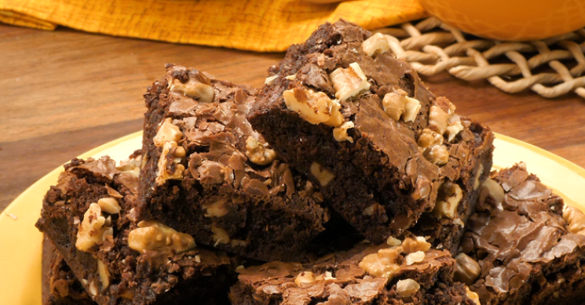

brownie super facil
A receita perfeita para sua festa de família

 INGREDIENTES
INGREDIENTES
- 6 colheres (sopa) bem cheias, de margarina sem sal
- 1/2 xícara (chá) de nozes picadas ou castanhas de caju granuladas
- tablete de chocolate meio amargo picado em cubinhos
- colheres (chá) de extrato ou essência de baunilha
- 2 pitadas de sal
- 4 ovos
- 2 xícaras (chá) açúcar
- 1 e 1/4 xícara (chá) farinha de trigo
- 1/2 xícara (chá) chocolate em pó
- xícara (chá) achocolatado
 MODO DE PREPARO
MODO DE PREPARO
- Misture os ovos e o açúcar.
- Em seguida, agregue todos os outros ingredientes até formar um creme uniforme.
- Misture os ovos e o açúcar
- Em seguida, agregue todos os outros ingredientes até formar um creme uniforme
- Em seguida, agregue todos os outros ingredientes até formar um creme uniforme.
- Despeje em uma assadeira, forrada com papel-manteiga e leve ao forno médio por 40 minutos.
- O brownie estará pronto quando a parte de cima estiver levemente corada e, ao se espetar um palito, ele esteja
levemente úmido (devido ao chocolate derretido).
- Corte em quadrados ainda quente e sirva com uma bola de sorvete de creme, ou congele num saquinho para freezer.
- Para descongelar, coloque o brownie num prato de sobremesa e aqueça no micro-ondas, potência alta, por 1 minuto.
INFORMAÇÕES ADICIONAIS
O tradicional brownie de chocolate é uma preferência nacional, mas existem variações desse doce para agradar a todo
mundo, desde o brownie de nescau até o brownie fit que leva cacau, o brownie low carb e o brownie vegano.
Outra coisa que pode variar é a forma de fazer: geralmente é no forno, mas quer um brownie fácil que fica pronto em minutos? O brownie de caneca no microondas vai resolver a sua vida.
Confira a seguir algumas dicas para que seu brownie fique perfeito:
1) As pitadas de sal servem para realçar o sabor do chocolate: não deixe de usá-las!
2) Misture a farinha delicadamente para que a massa não fique pesada.
3) Usar forma de metal faz com que o brownie fique pronto mais rapidamente: se utilizá-la, fique de olho no tempo de forno.
Procurando mais receitas doces incríveis? Experimente as nossas receitas de brigadeirão, bolo de fubá cremoso, pavê
de chocolate simples, bolo de cenoura, pudim de leite condensado, brigadeiro, cookie americano perfeito e a melhor
receita de bolo de chocolate!
Se você adora receitas doces, confira nossas listas com pratos deliciosos:
Receitas com leite de coco: confira opções doces e salgadas
20 receitas com leite em pó: deliciosas e práticas
 PREPARO 40MIN
PREPARO 40MIN  RENDIMENTO 8 PORÇÕES
RENDIMENTO 8 PORÇÕES  FAVORITOS 100.000
FAVORITOS 100.000  COMENTÁRIOS 100.000
COMENTÁRIOS 100.000